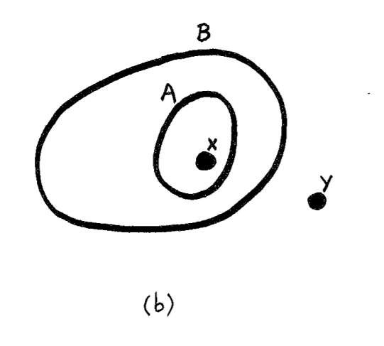

Would Aliens Understand
Lambda Calculus?
Tomas Petricek, fsharpWorks & Alan Turing Institute
tomasp.net | tomas@tomasp.net | @tomaspetricek
"Are pure functions invented or discovered?"
"I wonder if there is a paper about that?"
There is an entire discipline about that!
What is mathematics?
Crash course in philosophy of mathematics


Platonism
The existence of mathematical objects is independent of us, our language, thoughts and practices.
The sad consequences
The Romance of Mathematics makes a wonderful story, but it intimidates, it helps to maintain an elite, it rewards incomprehensibility.
Lakoff, Núñez (2000)

Social mathematics
Mathematics does not grow through increase of the number of established theorems, but through improvement by specu- lation and criticism, by the method of proofs and refutations.
Lakatos (1976)
Counter-example causes refinement
"I turn aside with a shudder of horror from this lamentable plague of functions which have no derivatives."

Culture & mathematics
Culturally specific ideas often find their way into
the very fabric of mathematics itself.Lakoff, Núñez (2000)
Ancient culture in maths
- The idea of essence
- The idea that human reason is a form of logic
- The idea of foundations for a subject matter

Embodied mathematics
The only mathematics we know or can know is
a brain-and-mind-based mathematics.Lakoff, Núñez (2000)
How to study mathematics?
It is up to cognitive science to apply the science of mind to human mathematical ideas.
Embodied mathematics
Cognitive science of mathematics
Metaphors are central to thought
Cognitive science [showed that], abstract concepts
understood, via metaphor, in terms of more concrete concepts.Many mathematical ideas are ways of mathematicizing ordinary ideas,
as when derivatives mathematicize the idea of instantaneous change.Lakoff, Núñez (2000)
Components of the analysis
Innate arithmetic
Babies have some mathematical capacities
Conceptual metaphors
Links concepts via neural conflations
Layering metaphors
Explain more abstract mathematical concepts
Innate arithmetic experiments


Arithmetic is object collection
Linguistic examples
Add onions and carrots to the soup
Which is bigger, 5 or 7?
Equational properties
Adding A to B gives the same result as
adding B to A for object collections
Limitations of the metaphor
Zero in terms of collections?
"Type theory and the \(\lambda\)-calculus are eternal"
"Libraries are ephemeral compared to maths"
"\(\lambda\)-calculus is discovered, Angular is invented!"
What is computer science?
Lambda calculus, category theory and functional programs
Programs
|
Proofs
|
Categories
|
Is this a deep truth about the universe?
Philosopher's answer
Category mistakes
- Program refers to empirical, a posteriori knowledge
- Proof refers to non-physical world of logic
Verification controversy
The idea of program verification is what philosophers call "category mistake". Program verification is, literally, a form of nonsense.
Fetzer (1988)
Sociologist's answer, Take 1
Carefully constructed to fit well via the
method of proofs and refutations
- Cartesian closed category
- Intuitionalistic logic
- Simply typed lambda calculus
Sociologist's answer, Take 2
All three are product of the same network of mathematicians, solving the same problem.
Searching for foundations of mathematics, formalising reasoning based on inference that could be done mechanically.
Cognitive scientists's answer
All three are derived from the same embodied experience using a number of conceptual and layering metaphors.
What is the embodied experience?
"Would aliens understand \(\lambda\) calculus?"
"Any intelligent species is bound to have logic."
"They'd also run into the program-proof duality."
Where lambda calculus comes from?
Cognitive science and lambda calculus
Container schema

Metaphors behind reduction, Part 1
Modus Ponens
Given two Container schemas A and B and an
object X, if A is in B and X is in A, then X is in B.
Function Application
Given two types \(A\) and \(B\) and a value \(x\),
if \(f : A\rightarrow B\) and \(x:A\) then \(f(x):B\)
Metaphors behind reduction, Part 2
Evaluation using \(\beta\)-reduction
reduce, verb (used with object), reduced, reducing.
- to bring down to a smaller extent, size, amount
- to lower in degree, intensity, etc.
- to bring down to a lower rank, dignity, etc.
Metaphor requires a sense of direction!
"Would E.T. understand lambda calculus?"
"How about the planet in Lem's Solaris?"
"How about aliens from the Arrival movie?"
Aliens and lambda calculus
Cognitive science of extra-terrestrial beings
Stanislaw Lem's Solaris
The planet itself is a sentient being!
There is only one being in the world
Would it have more numbers than one?
Aliens from the Arrival movie
Circular language and time perception
No notion for direction
Function application is directional!
Perhaps only reversible computations?
Interstellar dust cloud
Aliens living in chaotic gaseous universe
There are no boundaries in chaos!
There is no inside and outside
No container schema metaphors
Summary
Would aliens understand lambda calculus?
Would aliens understand lambda calculus?
Is lambda calculus discovered or invented?
Platonism is just one religious belief
Philosophy of mathematics and computer science
Social, cultural enterprise, product of embodied mind
So, would aliens understand lambda calculus?
Stretch your imagination! Boring aliens might...
Movies to watch & stories to read
Arrival (2016) or Chiang's Story of your life
Aliens with circular language and time
Solaris (2002) or Stanislaw's Lem Solaris
Not your grandma's sentient being
Philosophy books to read
Imre Lakatos, Proofs and refutations
How mathematics actually works
Lakoff & Núñez, Where mathematics comes from
Cognitive account of mathematics via metaphors
Donald MacKenzie, Mechanizing proof
Category mistakes and dissenting voices in the community